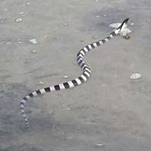
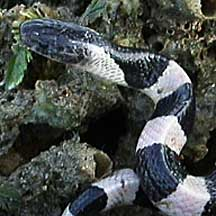
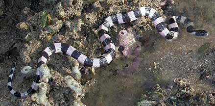
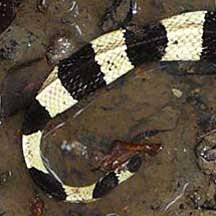
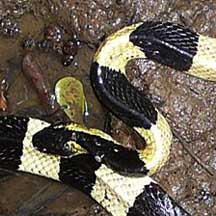

|
|
| snakes text index | photo index |
| Phylum Chordata > Subphylum Vertebrata > Class Reptilia > shore snakes |
| Banded
krait Bungarus fasciatus Family Elapidae updated Oct 2016 Where seen? Usually rarely seen, this beautiful snake was the highlight of the Chek Jawa boardwalk grand opening! The Singapore Snakes blog also reported swimming near mangroves on an offshore island. According to Baker, in Singapore it has also been recorded in Pulau Ubin, Pulau Tekong, Lim Chu Kang, Sungei Buloh and Khatib Bongsu. Widely distributed in Southeast Asia where it is mostly a coastal snake, but also found in peat swamps and also estates. Features: 1.5-2m long. The body has a triangular cross-section. It has regular black and white bands of equal size. The head is mostly black and is somewhat distinct from the body (it has a 'neck'). The black patch on the head forms a V-shape with the first black band on the body. The tail is not flattened into a paddle shape although it is somewhat triangular like the rest of the body. A highly venomous snake with a toxin that can be fatal to humans with recorded fatalities. But is not an aggressive snake and it will not bite if it is left alone. When it is scared, it will hide its head under coils of its body. Although it has also been recorded as being active and dangerous at night. WARNING: more aggressive baby cobras (Naja sumatrana) have similar markings. Sometimes confused with the highly venomous Yellow-lipped sea snake (Laticauda colubrina). Here's how to tell apart banded snakes seen near the coast. It may also be confused with eels. Here's more on how to tell apart sea snakes, eels and eel-like animals. What does it eat? Mainly lizards and other snakes, as well as other small vertebrates. It considered to be mainly a coastal snake, and terrestrial. Although we have observed one hunting on the coral rubble area at Chek Jawa, investigating crevices, then swimming away in the shallow water. |
 Swimming in shallow water near coral rubble. Chek Jawa, Jul 02  Black patch on the head forms a V-shape with the first black band on the body. Chek Jawa, Jul 02 |
|
 Chek Jawa, Jul 02 |
| Banded kraits on Singapore shores |
| Photos of Banded kraits for free download from wildsingapore flickr |
| Distribution in Singapore on this wildsingapore flickr map |
|
||
 |
 |
|
Links
References
|
|
|